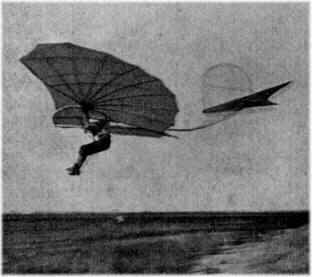
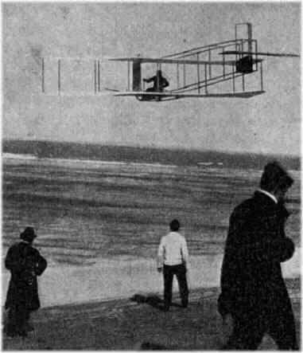

|
Inicio
Bibliografía
Noticias
Hangar
Actividades
Cursos
Comisión
Fotos
Videos
Ubicación
Contáctenos
Links
|
|
Manual del Vuelo a Vela
Wolf Hirth - 1942
HISTORIA DEL VUELO A VELA
por GEORG BRÜTTING
1º Sección
Volar - dominar el espacio aéreo - es uno de los más antiguos sueños de la Humanidad...
Este anhelo se trasluce siempre a
través de los siglos de la Historia, en las leyendas y dibujos de todos los pueblos del
mundo; este problema se expone siempre bajo las más diversas formas en las tentativas
llevadas a cabo en muchos países. El genio universal de Leonardo da Vinci fue el primero
que estableció sus investigaciones sobre una base científica, pero vivió demasiado
pronto, y generalmente en las cuestiones de aviación el "vivir y obrar demasiado pronto" o "pasar inadvertido"
originó un aciago destino. Sin embargo, siempre hubo hombres
que con sus incansables estudios y experimentos quisieron descifrar el enigma eterno. Los
vuelos en globo habían tenido éxito; en París había optimismo sobre la navegación
aérea; pero todavía no se había llegado al avión, que aprendió su arte de los
pájaros. Todos los ensayos intentados en el siglo XIX, en los países de Europa y
América, no habían llegado al éxito definitivo, con la excepción de un americano que
merece los honores de ser citado, John Montgomery, el cual puede decirse que voló ya en
1884. Por sorprendente que parezca la noticia, hay que creerla ante los detalles con que
nos ha llegado su descripción. Octavio
Chanute en su obra Progress in flying machines (Progresos del avión)
habla de un vuelo realizado con pleno éxito en un día del año 1884, cerca de
Oakland en las primeras horas de la mañana y
en el que se recorrió un trayecto de más de 200 metros; en nuevos ensayos, el planeador
se rompió porque el hermano menor de Montgomery retuvo demasiado tiempo la cuerda que
servía para el envuelo. Sin embargo, aunque estos vuelos de Montgomery tuviesen éxito, no influyeron en el progreso de la
aviación. Estaba reservado al alemán Otto Lilienthal pasar a la historia de la aviación
como el primer hombre que consiguió volar. Estudios científicos y observaciones exactas
de la Naturaleza le permitieron encontrar las leyes de las cuales resultó su primer vuelo
planeado, que fue producto de diez años de estudio y de construcciones de modelos y de
aparatos de alas batientes. Con razón es llamado Otto Lilienthal "padre del vuelo
humano", pues él fue el primero que experimentó sistemáticamente los fundamentos del
vuelo y que, después de sus estudios, hizo ensayos prácticos y vuelos reales, fiel a su
lema: "Una idea carece de valor; hacer un avión, tiene alguno; un vuelo es lo que vale
por todo".

Fig. 1. Vuelo planeado de Lilienthal, ejecutado el día 29 de Junio de 1895, Lichterfelde.
No solamente reflexionó sobre
sus ideas, no solamente construyó su planeador, ¡ también voló ! Después de pacientes
observaciones, cálculos y construcciones, consiguió realizar vuelos con su planeador,
compuesto simplemente de un par de alas de mimbre recubiertas de lienzo; primero en los
alrededores de Berlín; más tarde, lanzándose desde una colina artificial : el planeador
carecía de órganos de mando, el cual se realizaba solamente con los movimientos del
cuerpo (fig. 1).
Pasaron años; cada vez eran mayores los "saltos" de
Otto Lilienthal, que, al fin, los realizó en las laderas de la colina de Rhinower:
siempre intentaba llegar a conseguir el manantial de energía que faltaba al hombre para
poder volar libremente, por nuevos estudios y nuevos perfeccionamientos de su aparato. Sin
embargo, llegó el 9 de agosto de 1896... : del montón de restos del planeador derribado
se sacaba a un hombre agonizante, cuyas últimas palabras fueron "¡Hacen falta
víctimas!" Su muerte es para los alemanes una línea de conducta: Lilienthal es el
comienzo del desarrollo de un gran ideal; sus últimas palabras enseñan el duro camino
que hay que seguir para conquistarle...
Los hermanos Wright, Chanute, Herring y otros propulsores
continuaron en América la obra de Lilienthal, en oposición al cual los hermanos Wright
ensayaron hacer movibles las alas en lugar del cuerpo del aviador, y así encontraron el
órgano adecuado de mando del avión, cuyo modo de obrar sigue conservado fundamentalmente
hasta nuestros días. Chanute y Herring emplearon un planeador análogo al de Lilienthal,
pero con planos movibles para la estabilidad lateral y longitudinal y crearon así los
timones de altura y de dirección. Los hermanos Wright emplearon las alas para la
estabilidad alrededor del eje longitudinal y encontraron así el alabeo, hoy sustituido
corrientemente por los timones situados en el borde de salida de las alas y que son los
alerones o timones transversales. Wright encontró, después del ensayo del aviador
colgado y echado, la posición verdadera del piloto sentado en el avión. Estas conquistas
de entonces hay que estimarlas como del mayor valor para el progreso de la construcción
de aviones. Al mismo tiempo, la actividad de los hermanos Wright representa una
culminación desde el punto de vista deportivo, pues Orville Wright voló el 24 de octubre
de 1911 durante 9,45 minutos, lo cual representa una marca que no pudo ser rebasada hasta
1921 en el Rhön (fig. 2).

Fig. 2. Velero de los hermanos Wright en la costa de la carolina del Norte.
Empezaron desde 1900 con los ensayos de planeadores de Chanute, y en ellos idearon los
timones de altura y de dirección y el alabeo de las alas. Después de haber ejecutado
más de mil vuelos planeados llegaron a instalar, en el avión, un motor con el cual
realizaron el primer vuelo con energía propia, el 17 de diciembre de 1903.
Es interesante decir que por este tiempo volvió a aparecer el planeador de Montgomery, con
el cual Daniel Maloney se atrevió a hacer la siguiente clase de vuelo: elevado por un
globo de aire caliente, se soltaba y descendía planeando hasta el suelo; después de
muchos vuelos, realizados con éxito ante otros dos compañeros que llevó a
presenciarlos, cayó mortalmente el 30 de junio de 1905 a consecuencia de la rotura de una
de las débiles alas del aparato.
Los vuelos sin motor citados hasta ahora son vuelos
planeados; ensayos preliminares que debían llevar al vuelo con motor. Como primeros
vuelos planeados deportivos, hay que citar los llevados a cabo por los estudiantes de
Darmstadt en las vacaciones de verano de los años 1911, 1912 y 1913; en la Wasserkuppe
del Rhön, bajo la dirección de Hans Gutermuth, que cayó como
aviador en la guerra mundial, y de su amigo Berthold Fischer, habiendo sido este grupo de
Darmstadt el descubridor de la Wasserkuppe como terreno extraordinariamente apropiado para
tal clase de vuelo. Este grupo consiguió en él, en 1913, la marca de un planeo de 813 m.
de distancia y 1,52 minutos de duración. La guerra mundial puso término a estos trabajos
- dejó cortados, de modo inesperado, los anhelos de muchos jóvenes entusiastas de la
aviación, de llegar a volar por sí mismos -. En 1918 se condena a la aviación alemana a
la mutilación, para siempre, de lo más querido y a esto no se resignan muchos de esos
jóvenes. En esta situación se empezó a tratar con
mimo a la aviación sin motor: en parte, como sustitutivo del vuelo con motor; en parte,
como nueva tierra de promisión del arte de volar, como vuelo a vela imitando a los
incansables pájaros. Así se hizo en 1919 la nueva llamada hacia el deporte del vuelo
planeado, en la revista Flugsport, cuyo director Oskar Ursinus la puso siempre,
como portavoz, a disposición de las jóvenes energías que se despertaban. Especialmente
hay que citar la campana de Erich Meyer, de Dresde, de febrero a abril de 1919, con su
múltiple y repetido tema: « ¿ Cómo poder volar en planeo y a vela ? » Y su finalidad:
« Por medio del aprovechamiento de la energía del viento, conseguir el vuelo humano, sin
motor, para llegar al vuelo a vela, equiparable al vuelo en avión con motor » (Flugsport,
1919, núms. 3 a 8), y, además, las prontas excitaciones a la juventud de Wolf Hirth
y Paul Brenner, de Stuttgart. No es casualidad el que estos tres nombres procediesen del
grupo de deporte aéreo del tiempo anterior a la guerra. El grupo y asociación para el
vuelo planeado de Stuttgart fue el que acaudilló, en 1919, la Unión alemana de
asociaciones y grupos de vuelo planeado, cuya dirección tomó en 1920 la Asociación
técnica de aviación de Dresde, la cual hizo desde esta ciudad, en 24 de marzo de 1920,
un llamamiento general a todos los interesados en los vuelos planeados y a vela para un
Concurso de tales vuelos en el Rhön, que permitiese mostrar el grado de progreso
alcanzado. Inesperado fue el eco de este llamamiento, numerosas las consultas y presuroso
el trabajo. En todas partes se hacen preparativos; se visita muchas veces la Wasserkuppe y
su terreno y, en el verano de 1920, tiene efecto el primer concurso de más de siete
semanas de duración. Veinticinco jóvenes entusiastas del vuelo vinieron a la Wasserkuppe
desde todas las partes de Alemania, en parte con aparatos de su invención: los unos se
habían inspirado para sus construcciones directamente en los aviones de motor, mientras
que otros habían tomado corno modelo el planeador de fácil construcción del precursor
Lilienthal o de Chanute. Aviadores de la guerra y la juventud entusiasta pasaron juntos
los días del primer concurso, días que, para todos, son inolvidables. Las marcas
conseguidas resultaron inferiores a las de los anos de anteguerra, a consecuencia del
tiempo desfavorable y la poca experiencia de los pilotos.
Todo el mundo se alegraba cuando había algún "desplome";
enorme era la animación si el planeador construido con tanta paciencia llegaba a
permanecer en el aire algo más de unos segundos. Finalmente, voló Pelzner, de Nuremberg,
en su planeador de piloto colgado, más de 500 m. y Klemperer, de Aquisgrán, pudo
conseguir los 1830 m. en 2,22 minutos, con su monoplano "Schwarzer Teufel", el mejor
aparato desde el punto de vista técnico. Los participantes más jóvenes eran Peter
Riedel y Wolf Hirth, los únicos de aquel tiempo que, además de Erich Meyer y Klemperer,
han permanecido hasta hoy como pilotos activos, fieles a las cosas del vuelo a vela. A
todos animaba entonces un mismo espíritu de entusiasmo, lo que fue motivo suficiente para
continuar la obra empezada.
|